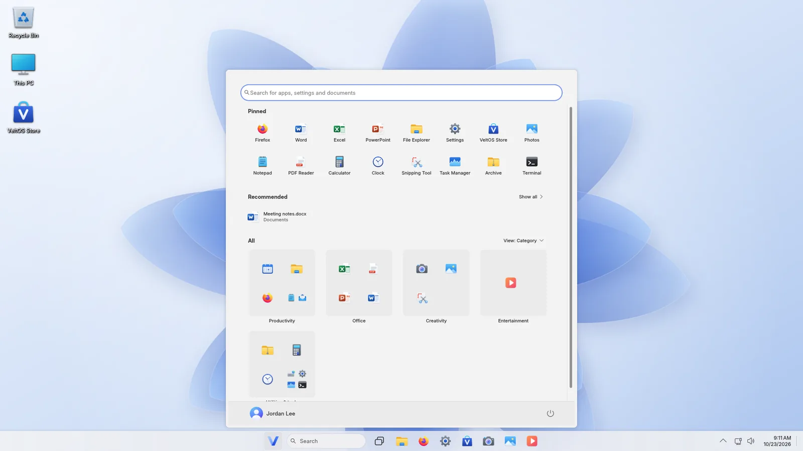
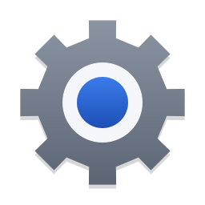
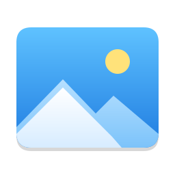
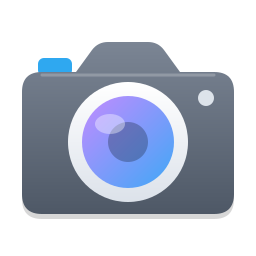
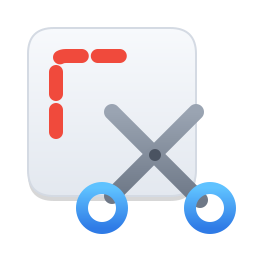
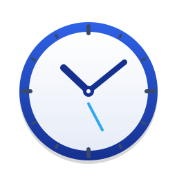
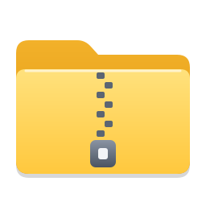
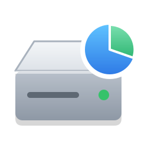
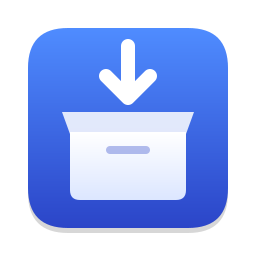

Start, taskbar, search
A centred taskbar with live window previews, Start with pinned apps and recommendations, search as you type, Task View with virtual desktops, and the right-click menus you know.
Version 0.1 · pre-alpha · built on Debian 13
VeltOS is a desktop operating system that works the way Windows 11 users already know — Start, the taskbar, File Explorer, Settings and a Store — with its own apps, a modern installer and support for Windows programs through Wine. Free, open source and built on Debian.

* Measured on an installed system in a QEMU/KVM virtual machine (4 cores, no 3D acceleration). Start-up is kernel and userspace as systemd-analyze reports them, without firmware and the boot menu. Your hardware will differ.
Familiar from the first minute
No new habits to learn. VeltOS follows the layout and the little details of Windows 11, and keeps the speed, security and freedom of Linux.
A centred taskbar with live window previews, Start with pinned apps and recommendations, search as you type, Task View with virtual desktops, and the right-click menus you know.
Tabs, Home, This PC, the Recycle Bin, Properties, zip files and Windows drives — and the same file dialogs in every program.
Wi-Fi, Bluetooth, display, sound, accounts, apps, privacy and updates on pages you already know, in your language.
Thousands of free apps and games from Debian's signed archive, installed and updated with one click.
Word, Excel and PowerPoint start screens on LibreOffice, saving in Microsoft's formats by default, and VeltOS Mail in the look of Outlook.
Double-click an .exe or .msi: VeltOS installs it with Wine and adds it to Start and Settings. Not every program works yet — VeltOS tells you.
If VeltOS does not start twice in a row, a repair screen offers Startup Repair, Safe mode, Command Prompt and the last start's problems.
Software only from signed Debian archives or built from VeltOS' own sources, Secure Boot, AppArmor, and disk encryption that asks for the password at start-up, like BitLocker.
Light and dark mode, eight themes with their own wallpapers, an accent colour that follows you into every VeltOS app — and Windows 11's animations.
Built for VeltOS
Written for VeltOS in the layout of their Windows 11 counterparts, in English and Turkish, light and dark.

Settings
Photos
Camera
Snipping Tool
Clock
Archive
Disk Management
Windows programsSee it
Taken on VeltOS itself, in a virtual machine. Select a picture to see it larger.
Windows programs
VeltOS opens Windows installers and programs with Wine in one Windows environment, like the single C: drive of a PC. Installed programs appear in Start and in Settings, where they are uninstalled as on Windows.
VeltOS reads its name, publisher and icon and shows what it will do.
The program's own installer runs; Wine Mono and Gecko are already on board, nothing is downloaded.
In Start, listed in Settings › Apps, with DXVK for games on Vulkan graphics.
Honest note: Wine does not run every Windows program, and it is not a security sandbox — run only programs you trust.
Installing… the program will appear in Start.
Get VeltOS
VeltOS is pre-alpha: try it in a virtual machine or on a spare PC, not on the computer you depend on.
Test builds of the ISO are published on GitHub when they are ready. One ISO starts as a live system and installs VeltOS.
GitHub ReleasesEverything builds and tests in Docker; the host needs nothing else.
git clone https://github.com/AhmetFurkanDEMIR/VeltOS.git
cd VeltOS
build/run.sh iso
build/run.sh testUnder the hood
VeltOS reuses mature upstream software instead of forking it, and adds small, tested packages of its own.
| Version | 0.1 (pre-alpha) |
|---|---|
| Base | Debian 13 “trixie” |
| Kernel | Linux 6.12 LTS |
| Desktop | KDE Plasma 6.3 on Wayland, with VeltOS' taskbar, Start and Task View |
| Installer | Calamares 3.3 with VeltOS' pages; optional disk encryption |
| Office | LibreOffice 25.2 |
| Web and mail | Firefox ESR 153 · Thunderbird 140 ESR |
| Windows programs | Wine 10.0, DXVK |
| VeltOS apps | Python and Qt Quick (PySide6 6.8) |
| Languages | English, Turkish |
| ISO | One hybrid image for USB sticks and DVDs, live system and installer in one |
| License | Free and open source (GPL and compatible licences; artwork CC BY-SA 4.0) |
Every package runs its unit tests while it builds, the image checks itself before it is written, and each ISO boots in QEMU with UEFI and BIOS with checks for the desktop, crashes and start-up times.
Every background service has to earn its place; start-up and memory use are measured for each ISO.
Roadmap
Architecture, Debian base, the desktop, driver and compatibility strategy.
Live system, installer, VeltOS' desktop and apps, boot tests in virtual machines.
The runner, one Windows environment, programs in Start and Settings; more programs tested.
Install tests on real hardware, update channels, public releases.
Recognise the PC's devices and recommend drivers, such as NVIDIA's, from signed archives.
Steam with Proton, DXVK and VKD3D-Proton, game profiles and measured benchmarks.
Questions
No. VeltOS is a Linux system built on Debian. It looks and behaves like Windows 11 so that you feel at home, but it is a different operating system and is not affiliated with Microsoft.
Many do, through Wine; some do not, and some run with problems. VeltOS never promises that every program works — it shows you what happened, and for many tasks it offers its own apps instead.
No. VeltOS is free and open source, and so is the software it is built from.
Not yet: version 0.1 is a pre-alpha for testing. Try it in a virtual machine or on a spare PC and tell us what you find on GitHub.
From Debian's signed archives, through VeltOS Store and Settings; VeltOS' own packages are built from the code in this repository.
English and Turkish, everywhere VeltOS has its own windows. Debian's and KDE's parts are available in many more languages.